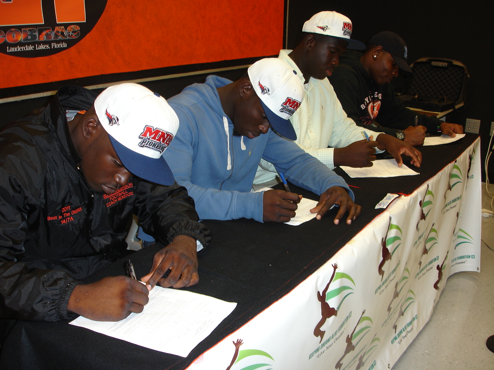
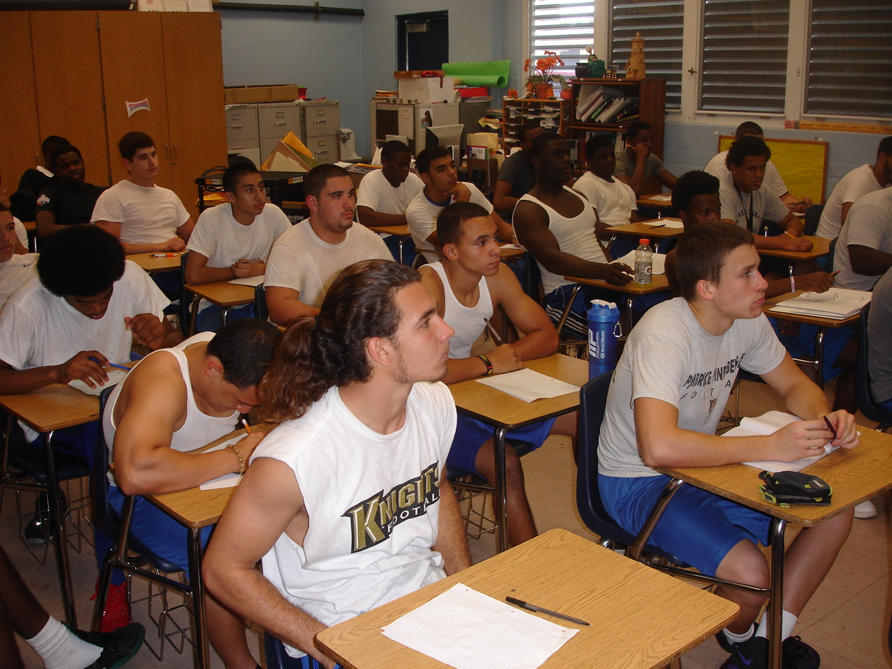
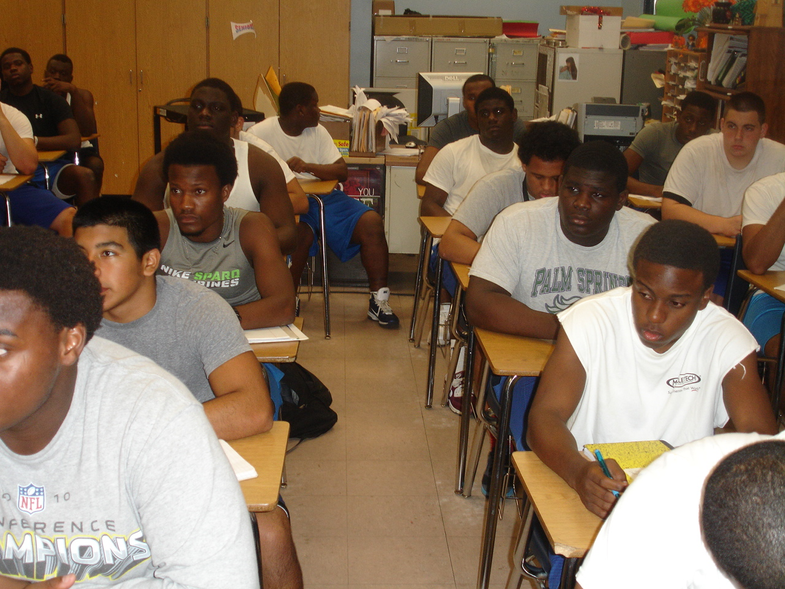
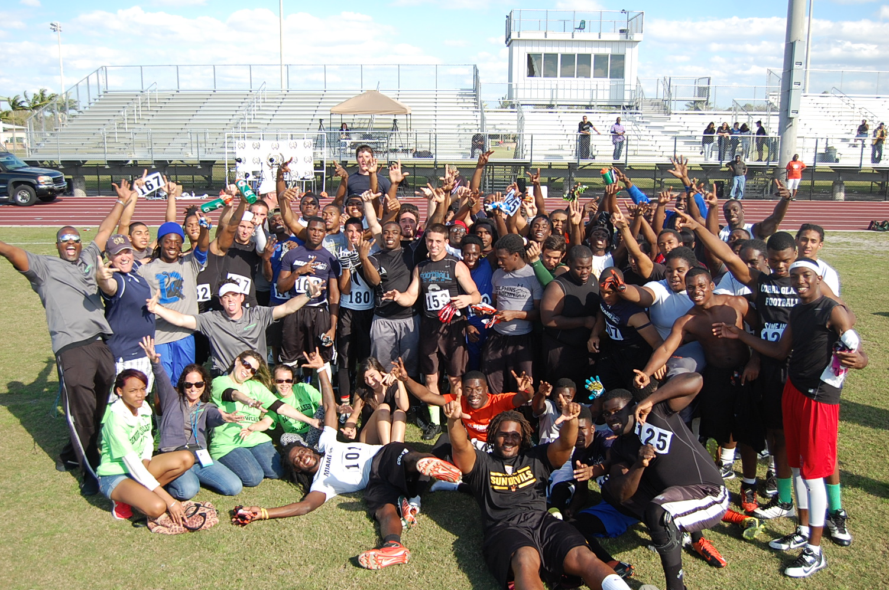
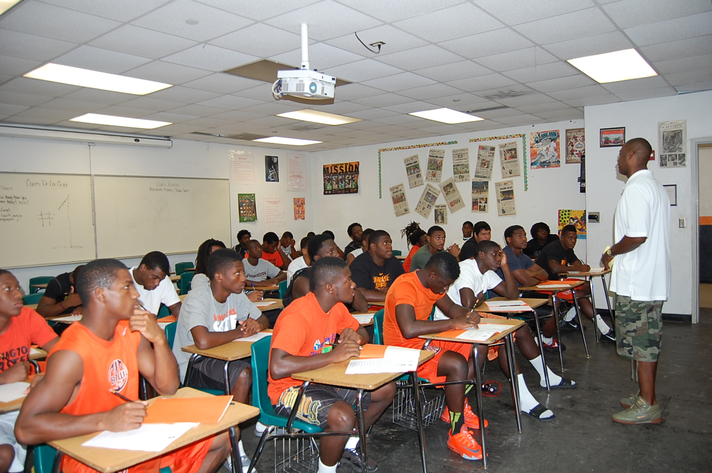

Success matters most when it is used to serve others. For Glenn, that deeper purpose has taken shape through the Keeping Dreams Alive Foundation — a mission devoted to children in at-risk communities and to helping them see a future larger than the limitations around them.
True legacy is not only what you build. It is who you help believe they can build a life of their own.
The Keeping Dreams Alive Foundation is not separate from the story. It is one of the clearest expressions of it — discipline with compassion, leadership with responsibility, and success used to create hope.
Since 2003, over 20,000 students and student athletes have been supported through programs designed to inspire discipline, confidence, and opportunity — at no cost to them.





In at-risk communities, young people often face more than ordinary obstacles. They may grow up with limited resources, unstable support systems, fewer opportunities, and far too many messages that tell them to expect less from life.
The real danger is not only hardship. It is hopelessness. It is the quiet belief that a dream is unrealistic before a child has ever had the chance to chase it.
The Keeping Dreams Alive Foundation exists to interrupt that story. It gives young people more than encouragement. It gives them exposure, mentorship, life-development support, and the kind of steady presence that helps reshape what they believe is possible.
Because when a child is seen, guided, and challenged with love, everything can change.
The first breakthrough is often internal. Before success is visible, confidence has to be planted.
Young people do not just need inspiration. They need people who will show up, lead, and stay committed.
A single opportunity can become a turning point that redirects an entire life.
“Over the years, I have learned that achievement alone is not enough. If the blessings, opportunities, and lessons we gain in life are not used to help someone else rise, then we have missed part of the reason we were given them. Keeping Dreams Alive Foundation matters to me because every child deserves someone who believes in them before the world tells them to settle.”
“This is part of my life, part of my purpose, and part of the legacy I want to leave behind — not just building things, but helping build people.”
Stoutt Property Management reflects standards, discipline, stewardship, and responsibility. The Keeping Dreams Alive Foundation reflects those same values in another arena: the lives of children who need someone willing to invest in them.
Together, they tell a fuller story — one of leadership that is not only operational, but personal. Not only successful, but meaningful.
Buildings matter. Communities matter. Businesses matter. But the deepest legacy comes from helping shape lives that are still being formed. That is where stewardship becomes eternal.